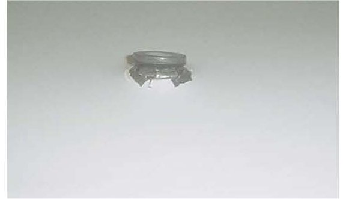
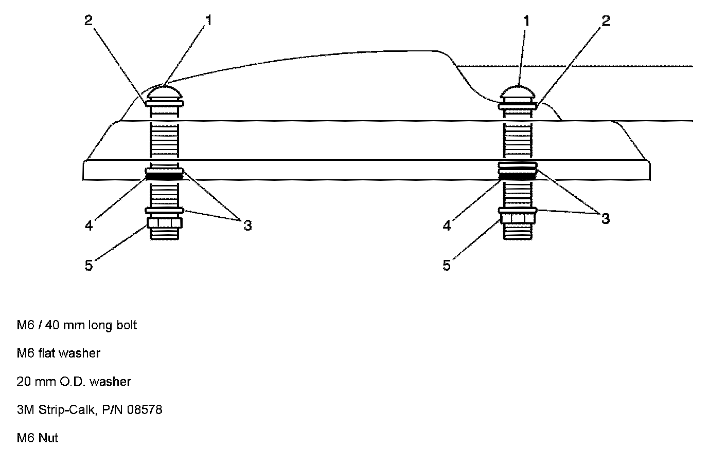
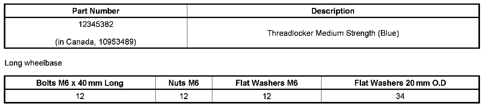
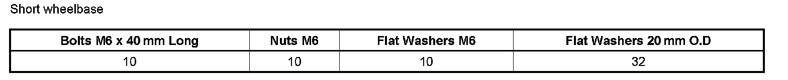
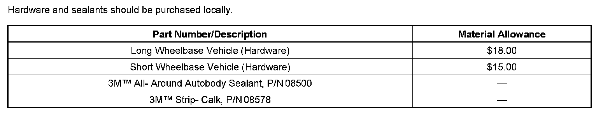
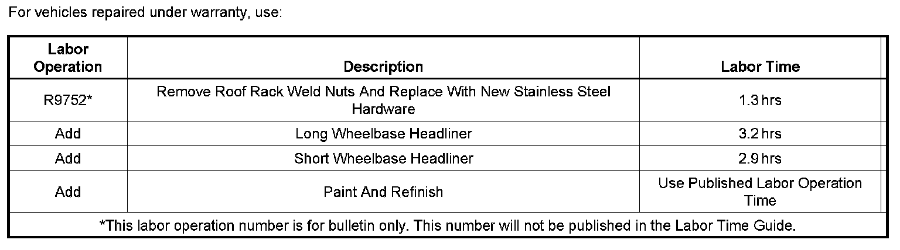

Body - Roof Rack Lifting Away From Roof When Used
TECHNICALBulletin No.: 08-08-67-015
Date: October 14, 2008
Subject:
Roof Rack Lifting Away from Roof When in Use (Replace Weld Nuts with Stainless Steel Nuts and Bolts)
Models:
2007-2009 Cadillac Escalade, Escalade ESV, Escalade EXT
2007-2009 Chevrolet Suburban, Tahoe
2007-2009 GMC Yukon Denali, Yukon Denali XL
Condition
Some customers may comment that the roof rack is lifting away from the roof.
Cause

The weld nuts may not be fully seated in the roof sheet metal.
Correction
Remove all of the weld nuts and replace with stainless steel nuts/washers and bolts. Use the procedure below.
1. Remove the headliner. Refer to Head Liner Replacement in SI.
2. Remove the roof rack.
3. Using a grinder, remove the head of the weld nut.
4. Repair the roof if necessary. For the proper refinish materials to use, refer to the 2008 GMWI5406 GM Globally Approved Refinish Materials Information. The refinish materials information is now on line at the GMGOODWRENCH WEB SITE*. Painted books have been discontinued. To access the site, follow these steps:
^ Go to www.gmgoodwrench.com.
^ Click on For Body Shop & Service link at the bottom of the page.
^ Click on GM Technical Repair Information.
^ Click on Paint Shop tab.
^ * In Canada, the 2008 GM Approved Refinish Materials Booklet is also available on the GM info NET under the Service and Body tab.
5. Place the roof rack on a stand.

Important:
Place only one washer in the very front of the roof rack and for the rest install two.
6. Install an M6 x 40 mm long bolt with an M6 flat washer through the roof rack. Place two 20 mm O.D. flat washers on the bottom side of the rack. Place *3M(TM) Strip-Calk, P/N 08578, around the top of the washer and bolt. This will help hold the washers in place and seal the open in the roof from water entering the vehicle.
7. With the aid of an assistant, install the roof rack to the vehicle.
8. From the inside of the vehicle, apply *3M(TM) All-Around Autobody Sealant, P/N 08500, around the bolt.
9. Apply Threadlock Medium Strength Blue, P/N 12345382 (in Canada, P/N 10953489), to the nuts and install the washer and nut.
Tighten
Tighten the hardware to 9 Nm (80 lb in).
10. Install the headliner. Refer to Head Liner Replacement in SI.
*We believe this source and their products to be reliable. There may be additional manufacturers of such products. General Motors does not endorse, indicate any preference for or assume any responsibility for the products from this firm or for any such items which may be available from other sources.


Parts Information

Material Allowance

Warranty Information

Disclaimer